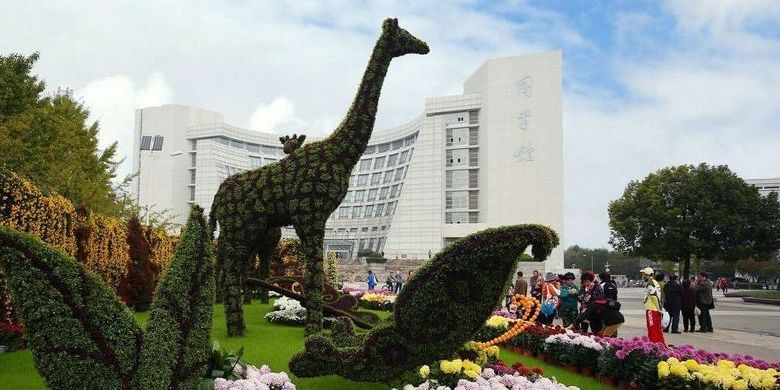

The purpose of the conference is to stimulate research and foster interaction of researchers interested in matrix theory and related topics. Sponsored by the two research centers at Shanghai University and the Sungkyunkwan University, the conference hopes to provide a convenient platform for the exchange of research experiences and ideas from different research areas related to matrix theory.
International Research Center for Tensor and Matrix Theory (IRCTMT),
Shanghai University, China.
Applied Algebra and Optimization Research Center (AORC),
Sungkyunkwan University, Korea.
Gaoyuan Discipline of Shanghai ！！ Mathematics, Shanghai City, China.